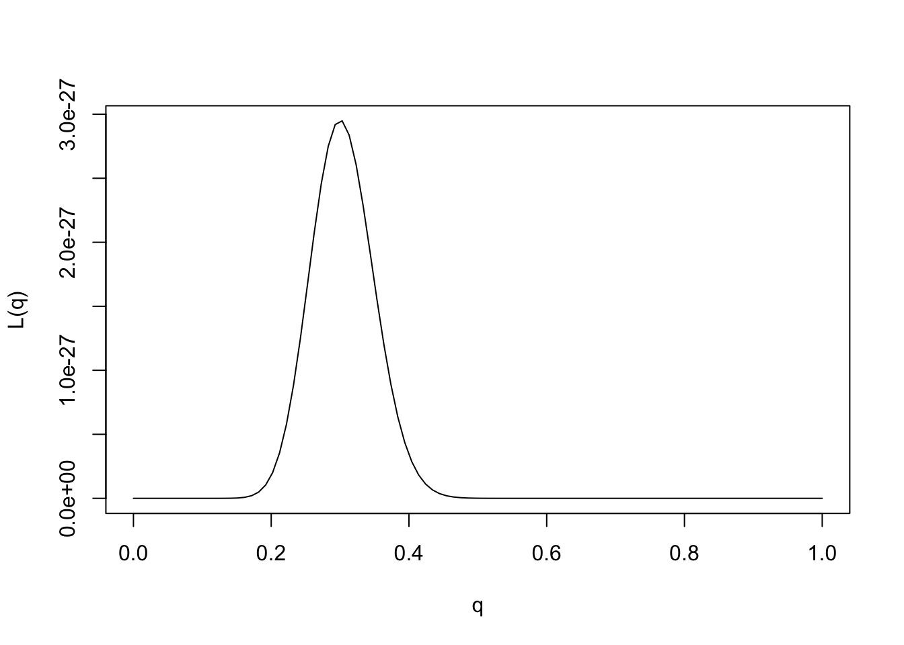
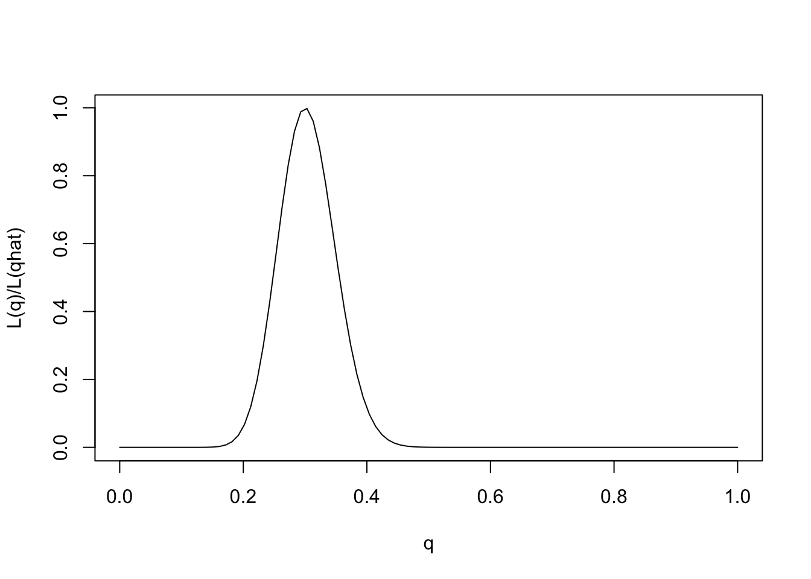
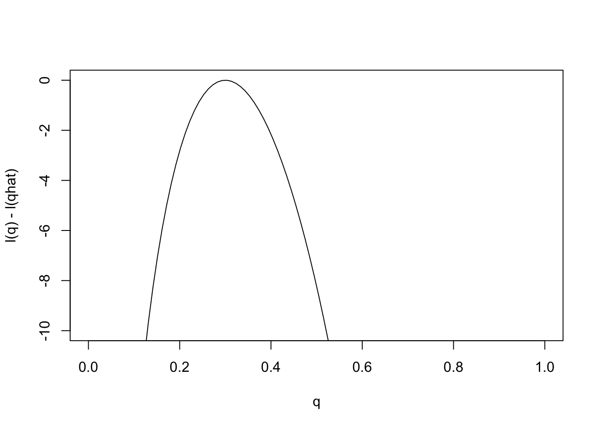

Last updated: 2016-04-06
Code version: f1dd5fc854711e60f44d9bc3ac6a85c21bbf8d68
You should understand the concept of using likelihood ratio for discrete data and continuous data to compare support for two fully specified models.
We have seen how one can use the likelihood ratio to compare the support in the data for two fully-specified models. In practice we often want to compare more than two models - indeed, we often want to compare a continuum of models. This is where the idea of a likelihood function comes from.
In our example here we assumed that the frequencies of different alleles (genetic types) in forest and savanna elephants were given to us. In practice these frequencies themselves would have to be estimated from data.
For example, suppose we collect data on 100 savanna elephants, and see that {30} of them carry allele 1 at marker 1, while {70} carry the allele 0 (again we are treating elephants as haploid to simplify things). Intuitively we might estimate that the frequency of the 1 allele at that marker is {30}/100, or 0.3. But we might think that the data are also consistent with other frequencies near 0.3. For example maybe the data are consistent with a frequency of 0.29 also. Or 0.28? Or …
In this case we have many more than just two models to compare. Indeed, if we allow that the frequency could, in principle lie anywhere in the interval [0,1], then we have a continuum of models to compare.
Specifically, for each \(q\in [0,1]\) let \(M_q\) denote the model that the true frequency of the 1 allele is \(q\). Then, given our observation that {30} of 100 elephants carried allele 1 at marker 1, the likelihood for model \(M_q\) is, by the previous definition, \[L(M_q) = \Pr(D | M_q) = q^{30} (1-q)^{70}.\] And the LR comparing models \(M_{q_1}\) and \(M_{q_2}\) is \[LR(M_{q_1};M_{q_2})) = [q_1/q_2]^{30} [(1-q_1)/(1-q_2)]^{70}.\]
This is an example of what is called a parametric model. A parametric model is collection of models indexed by a parameter vector, often denoted \(\theta\), whose values lie in some parameter space, usually denoted \(\Theta\). The number of parameters included in the vector \(\theta\) is called the “dimensionality” of the model or parameter space, and often denoted \(dim(\Theta)\).
Here the parameter is \(q\) and the parameter space is \([0,1]\). The dimensionality is 1.
When computing likelihoods for parametric models, we usually dispense with the model notation and simply use the parameter value to denote the model. So instead of referring to the likelihood for \(M_q\) we just say the “likelihood for \(q\)”, and write \(L(q)\). So the likelihood for \(q\) is given by \[L(q) = q^{30} (1-q)^{70}.\] Correspondingly we can also refer to the “likelihood ratio for \(q_1\) vs \(q_2\)”.
We could plot the likelihood function as follows:
q = seq(0,1,length=100)
L= function(q){q^{30} * (1-q)^{70}}
plot(q,L(q),ylab="L(q)",xlab="q",type="l")
The value of \(\theta\) that maximizes the likelihood function is referred to as the “maximum likelihood estimate”, and usually denoted \(\hat{\theta}\). That is \[\hat{\theta}:= \arg \max L(\theta).\]
Provided the data are sufficiently informative, and the number of parameters is not too large, maximum likelihood estimates tend to be sensible. In this case we can see that the maximum likelihood estimate is \(q=0.3\), which also corresponds to our intuition.
Note that from the likelihood function we can easily compute the likelihood ratio for any pair of parameter values! And just as with comparing two models, it is not the likelihoods that matter, but the likelihood ratios. That is you can divide the likelihood function by any constant without affecting the likelihood ratios.
One way to emphasise this is to standardize the likelihood function so that its maximum is at 1, by dividing \(L(\theta)/L(\hat{\theta})\).
q = seq(0,1,length=100)
L= function(q){q^{30} * (1-q)^{70}}
plot(q,L(q)/L(0.3),ylab="L(q)/L(qhat)",xlab="q",type="l")
Note that for some values of \(q\) the likelihood ratio compared with \(q=0.3\) is very close to 0. These values of \(q\) are so much less consistent with the data that they are effectively excluded by the data. Just looking at the picture we might say that the values of \(q\) less than 0.15 or bigger than 0.5 are pretty much excluded by the data. We will see later how Bayesian analysis methods can be used to make this kind of argument more formal.
Just as it can often be convenient to work with the log-likelihood ratio, it can be convenient to work with the log-likelihood function, usually denoted \(l(\theta)\) [lower-case L]. As with log likelihood ratios, unless otherwise specified, we use log base e. Here is the log-likelihood function.
q = seq(0,1,length=100)
l= function(q){{30}*log(q) + {70} * log(1-q)}
plot(q,l(q)-l(0.3),ylab="l(q) - l(qhat)",xlab="q",type="l") Changes in the log-likelihood function are referred to as “log-likelihood units”. For example the difference in the support for \(q=0.3\) and \(q=0.35\) is l(0.3)-l(0.35) = 0.5630377 log-likelihood units. Again, remember that it is differences in \(l\) that matter, not the actual values.
sessionInfo()R version 3.2.3 (2015-12-10)
Platform: x86_64-apple-darwin13.4.0 (64-bit)
Running under: OS X 10.11.3 (El Capitan)
locale:
[1] en_US.UTF-8/en_US.UTF-8/en_US.UTF-8/C/en_US.UTF-8/en_US.UTF-8
attached base packages:
[1] stats graphics grDevices utils datasets methods base
other attached packages:
[1] knitr_1.12.3
loaded via a namespace (and not attached):
[1] magrittr_1.5 formatR_1.2.1 tools_3.2.3 htmltools_0.3
[5] yaml_2.1.13 stringi_1.0-1 rmarkdown_0.9.2 stringr_1.0.0
[9] digest_0.6.9 evaluate_0.8